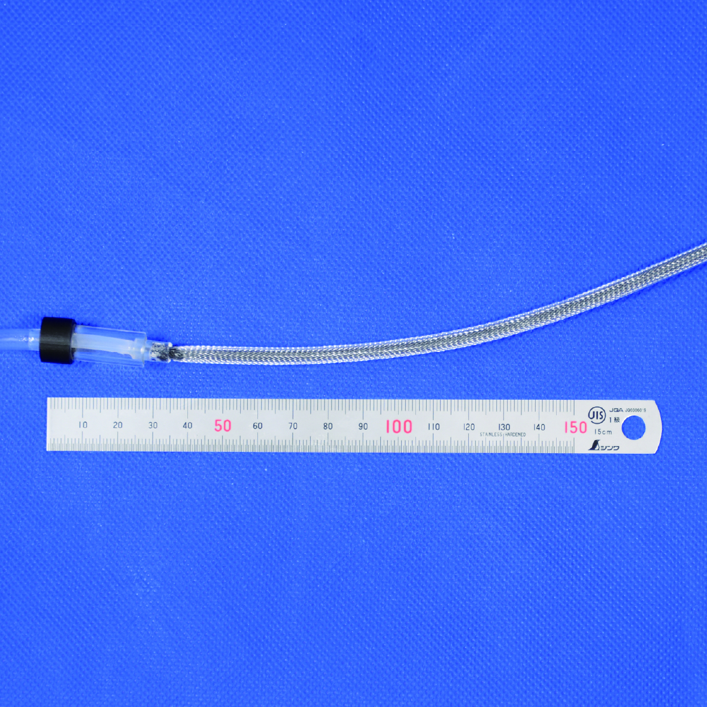

Publications
International Journal Papers

S. Tanaka, A. Comoretto, J.T.B. Overvelde, H. Nabae,
“Harnessing self-oscillating fluid-structure interactions to design emergent autonomy in physical machines,” (under review)

S. Suzuki, S. Tanaka, H. Nabae, S. Maeda,
“McKibben artificial muscle embedded with stretchable textile sensor,” Advanced Intelligent Systems, 2025.
S. Tanaka, H. Nabae, K. Suzumori,
“Back-Stretchable McKibben Muscles: Expanding the Range of Antagonistic Muscle Driven Joints,” IEEE Robotics and Automation Letters, 2023, (presented at Robosoft2024)
International Conference Proceedings (Peer-Reviewed)

S. Tanaka, R. Kobayashi, H. Nabae, K. Suzumori,
“Time-lag generation mechanical valve for enhancing time response of back-stretchable mcKibben muscles,” IEEE SII, 2025.
S. Tanaka, R. Kobayashi, H. Nabae, K. Suzumori,
“Fiber jamming mechanism for back-stretchable mckibben muscles,” IEEE SII, 2024.
Awards
- Research Encouragement Award (日本ロボット学会研究奨励賞), The Robotics Society of Japan (RSJ), 2025
- Miura Award (日本機械学会三浦賞), The Japan Society of Mechanical Engineers (JSME), 2025
- SICE International Young Authors Award for SII2025, The 2025 IEEE/SICE International Symposium on System Integration (SII2025)
- Excellent Presentation Award (修士論文中間発表会優秀賞), Interim Master’s Thesis Presentation Session (Mechanical Course), Tokyo Institute of Technology, FY2023
- Best Soft Robotic Paper Award, The 2024 IEEE/SICE International Symposium on System Integration (SII2024)
- Overall 2nd Place, 1st ACTS Competition, 2021
- UNISEC Award, 1st ACTS Competition, 2021
- 2nd Place, Technical System Award, 1st ACTS Competition, 2021
- Outstanding Student Award (優秀学生賞), Hakuseikai (33rd), Tokyo Institute of Technology, 2020
Talks & Posters
- S. Tanaka, H. Nabae, and K. Suzumori, “Dynamic Characteristics of Back-Stretchable McKibben Muscles,” The 7th Jc-IFToMM International Symposium, Japan, June 2024.
- S. Tanaka, H. Nabae, and K. Suzumori, “Toward Flexible Back-Stretchable McKibben Muscles,” ROBOSOFT 2024 Fluid-driven soft actuators: challenges and opportunities, USA, April 2024.
Domestic Conference Proceedings (Non-Reviewed)
- 田中翔真，難波江裕之，鈴森康一，“空圧駆動自励振動アクチュエータの特性評価”，第26回計測自動制御学会システムインテグレーション部門講演会 (SI2025)，2025年12月
- 田中翔真，伊藤春那，難波江裕之，原田恭治，福原洸，鈴森康一，“犬型筋骨格ロボットの凹凸面における歩行実験”，第43回日本ロボット学会学術講演会 (RSJ 2025)，2025年9月
- 木村直人，田中翔真，西田莉那，和田周賢，広瀬茂男，“連結差動リンク機構と空圧駆動式磁気吸着機構からなる廃炉作業ロボット用高可搬重量グリッパの開発”，日本機械学会ロボティクス・メカトロニクス講演会2025 (Robomech2025)，2025年6月
- 伊藤春那，田中翔真，難波江裕之，原田恭治，福原洸，鈴森康一，“犬型筋骨格ロボットの実験室外環境における歩行実験”，日本機械学会ロボティクス・メカトロニクス講演会2025 (Robomech2025)，2025年6月
- 田中翔真，難波江裕之，鈴森康一，“自励振動アクチュエータを用いたテザーレス環境適応型四脚ロボット”，日本機械学会ロボティクス・メカトロニクス講演会2025 (Robomech2025)，2025年6月
- 田中翔真，伊藤春那，石川雄太，森翔太，増田容一，難波江裕之，原田恭治，鈴森康一，“シカ解剖による筋肉の収縮率の測定”，第25回計測自動制御学会システムインテグレーション部門講演会 (SI2024)，2024年12月
- 伊藤春那，田中翔真，Na Gihyeok，難波江裕之，Feng Yunhao，原田恭治，福原洸，鈴森康一，“犬の四肢の筋骨格ロボットの歩行動作実験”，第42回日本ロボット学会学術講演会 (RSJ 2024)，2024年9月
- 田中翔真，山本陽太，難波江裕之，郡司芽久，鈴森康一，“周囲組織との結合境界条件に着目した人工羽状筋の試作と特性”，第42回日本ロボット学会学術講演会 (RSJ 2024)，2024年9月
- 山本陽太，田中翔真，難波江裕之，鈴森康一，“細径人工筋を用いた立体型羽状筋の試作”，日本機械学会ロボティクス・メカトロニクス講演会2024 (Robomech2024)，2024年5月
- 田中翔真，山本陽太，難波江裕之，鈴森康一，“人工羽状筋における境界条件が性能に及ぼす影響”，日本機械学会ロボティクス・メカトロニクス講演会2024 (Robomech2024)，2024年5月
- 田中翔真，難波江裕之，鈴森康一，“自励振動アクチュエータを用いた環境適応型四脚ロボット”，日本機械学会ロボティクス・メカトロニクス講演会2024 (Robomech2024)，2024年5月
- 田中翔真，難波江裕之，鈴森康一，“人工羽状筋の試作と特性評価”，第24回計測自動制御学会システムインテグレーション部門講演会 (SI2023)，2023年12月
- 田中翔真，難波江裕之，鈴森康一，“バックストレッチャブルマッキベン型人工筋肉の開発”，日本機械学会ロボティクス・メカトロニクス講演会2023 (Robomech2023)，2023年6月